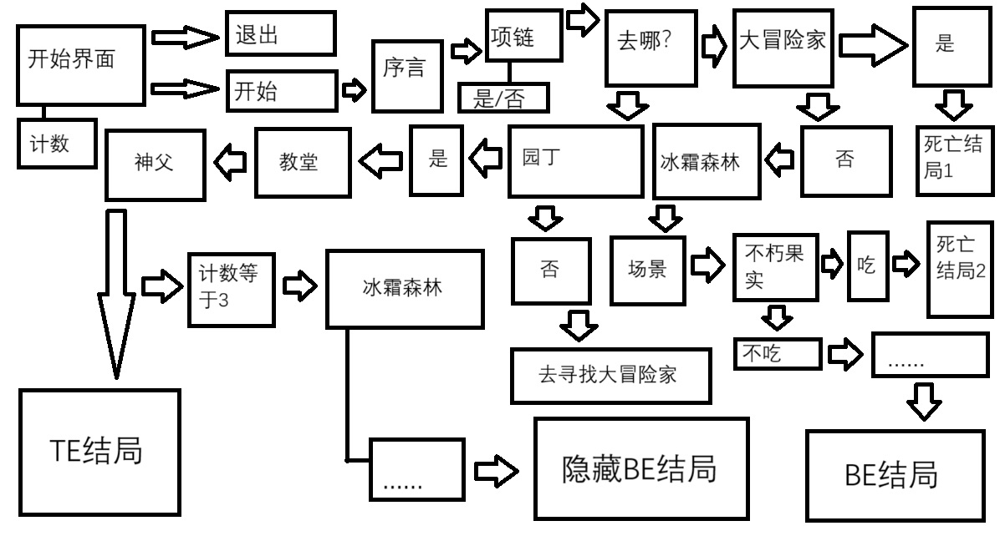

INTRO
theImmortalityFruit-不朽果实，是一个由Bolin制作发行的一款文字冒险游戏。
游戏发生在一个剑与魔法的幻想世界，在这里，被神选中的人将被授予“项链”，
获得特殊能力。玩家将扮演一位名为“***”的神秘角色，
在自由的旅行中遇见各种事件，逐步发掘“不朽果实”的真相。
q&a
Q: Mr.Bolin, 请问您是怎么想到要制作这么一款游戏呢？
A: 我原本是想做MBTI测试来着，但后来做着做着发现最简短的测试都要28问，
这意味着我要写28个jframe，太难了所以我只能换个赛道。
后来坐在那我想着交互面板能做什么就自然而然的想到了视觉小说。
我就在想，我是不是也可以搞一个？不过我实在是不会绘画所以后来改成了文字冒险游戏。
Q: Mr.Bolin, 那这个游戏剧情您是怎么想到的？毕竟大家都觉得这剧情挺逆天的。
A: 这个嘛。。。我想出这个剧情其实只用了10分钟。所以你懂的，
我原本就不是非常在乎他的这个故事性。当时对我来说能编写出这种效果都已经非常顶尖了。
Q: Mr.Bolin, 您刚才似乎说了“当时”？那是否说明现在这对你来说已经小菜一碟了呢？
请问您有什么收获？
A: emmm，确实我通过这个project收获了很多，不仅是jframe相关的程序，更是对编程的热情吧。。。像是学习javaweb，
但我觉得这跟其他人说的“内卷”不一样，当然这肯定是有为我解脱的成分在，我认为我这只是在我有兴趣为前提的一些尝试？学习？
往小的说，我接触这个project后才知道原来可以在method里面嵌method。往大的说，这个游戏不就是我最大的收获吗？
更何况这个web不也是我的收获：）
Q: Mr.Bolin, 您能否可以为我们讲解一下您游戏的运行逻辑？
A: 这个很简单的，毕竟我一个class就搞定了。一共有25个全局变量和加上main在内的22个method，一共写了1014行。
文字冒险游戏就是字面上的根据文字信息进行选择、冒险的游戏。一个接一个就行了，比如我进入了序言preface里面，看完序言，
点击button就可以跳转到下个界面。逻辑就是这么简单。
查看

Q: Mr.Bolin, 那您是否可以为我们更详细的讲解一下您程序里的逻辑？
A: 当然可以。在程序里，每一个method都会至少有一个按钮，ActionListener会监听你点击的事件，并运行
actionPerformed里的程序。actionPerformed里则会关闭当前method和打开下个指定method。除了button，
method里面还会有label，用来显示文字，原本我是用text的，但text真的太难看了。label可以设置大小，字体，颜色，
这些都是text办不到的。
Q: Mr.Bolin, 听说您这程序被要求必须加2D array？请问您2D array是用来干嘛的呢？
A: 原本的那个MBTI测试就是为了有这个2D array想出来的，但毕竟后来改项目了所以又得重新想。
我后来就想到既然我2D array最开始就是打算存string的，要不我这个新项目的2D array也这么干？
所以最后，我存了文本量最少的有选择性内容的button的名称，比如什么“佩戴”之类的。
每当运行一个有两选项的面板时，button就会根据我指定的2D array里的内容来初始化。
Q: 那最后，让我们来聊聊ai吧，毕竟那是一个凭一己之力改变csp的伟大工具。
A: 确实，我在做这个project的时候用到了chatgpt，但都是让他帮我润色剧情，毕竟我文笔不好。
有时候想不到该怎么写下去的时候也会询问chatgpt的意见。其实我是因为这个project才去学习使用chatgpt的，
之前一直懒得搞，实在不行时才去问一下new bing，现在有了chatgpt感觉整个人都踏实了。真的很神奇。
甚至连这个web的一些效果都是问了chatgpt做出来的。
下一页 »